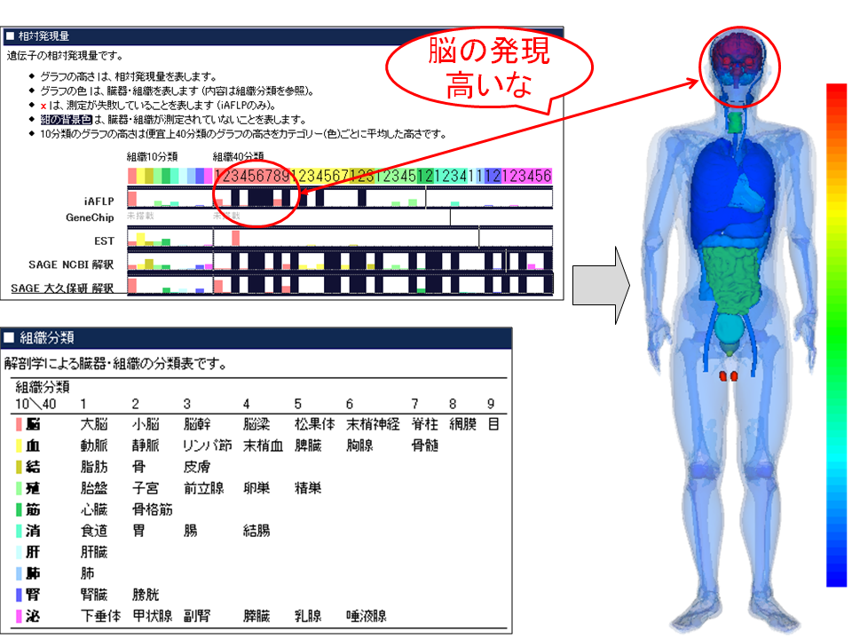

What you can do with BodyParts3D/Anatomography
Anatomography enables you to make publishable custom 3D human models.
- In this authoring site, you can make custom 3D human model with selected parts in BodyParts3D.
- Customization includes, parts selection, surface colors, opacity and pins and notes applicable to it.
- Your custom model can be stored, mailed, embedded in your webpage, as a "SOURCE FORM" which is an http message directed to Anatomography server.
- In response to your message, Anatomography Server returns the image data of your 3D model, either as a still image, rotating animation, or interactive image.
- Moreover, each part can be downloaded as polygon mesh file with which you can 3D print.
- Note: Some parts are still under construction, including peripheral nerves and facial arteries. Some parts are planned to receive further segmentation.
- Note: If you find errors in concept labelling or in morphology, please share your finding with Twitter from the BP Card (top page right window)
Examples
- As demonstrations, some illustrations in Gray's anatomy were reproduced in 3D space.
- With proper anatomical knowledge, reproduction of one illustration will cost you 3 steps in about 5 minutes.
| | Gray's illustration | Anatomography, still image | Anatomography, interactive frame |
| brain |
browser image (output) |

|

|
Edit
|
| in html (source form) |
<img src="http://www.bartleby.com/107/Images/large/image719.gif">
|
<img src="http://lifesciencedb.jp/bp3d/API/image.cgi?shorten=n8vamGbSjOzKuWvaiWeK55b8">
( note: encrypted message body following server address can be chosen as original sequence of parameter set which human can read and edit directly.)
|
<iframe width="425" height="350" frameborder="0" scrolling="no" marginheight="0" marginwidth="0" src="http://lifesciencedb.jp/bp3d/?shorten=Hf8jeWPHnaqy9vSTT9auy4Dq"></iframe>
|
| heart |
browser image (output) |

|

|
Edit
|
| in html (source form) |
<img src="http://www.bartleby.com/107/Images/large/image495.gif">
|
<img src="http://lifesciencedb.jp/bp3d/API/image.cgi?shorten=rCK5vOCmiKDqiqmqm4Xfimua">
( note: encrypted message body following server address can be chosen as original sequence of parameter set which human can read and edit directly.)
|
<iframe width="425" height="350" frameborder="0" scrolling="no" marginheight="0" marginwidth="0" src="http://lifesciencedb.jp/bp3d/?shorten=CmyuaS8vGrGj9baqaGv4zya4"></iframe>
|
| eye |
browser image (output) |

|

|
Edit
|
| in html (source form) |
<img src="http://www.bartleby.com/107/Images/large/image889.gif">
|
<img src="http://lifesciencedb.jp/bp3d/API/image.cgi?shorten=bKnS1jXXPDqWfaSDmaK5HbOD">
( note: encrypted message body following server address can be chosen as original sequence of parameter set which human can read and edit directly.)
|
<iframe width="425" height="350" frameborder="0" scrolling="no" marginheight="0" marginwidth="0" src="http://lifesciencedb.jp/bp3d/?shorten=DSLD4vDeiyam4vuyCSzq0Lre"></iframe>
|
Triple Mash-up visualization: visualization of anatomically, geographically classified cancer statistic
Fifty Anatomograms are mashed up with a Google Map.
Each Anatomogram shows the organ-specific cancer mortality by US state
(number of deaths per 100,000 white male-years, 1970 to 1994） that is published from
Cancer Mortality Maps & Graph at NCI.
On the map the distribution by organ and state is concisely visible,
while the original one illustrates
the distribution of only one kind of cancer (i.e. organ) by state.
By overlaying a population density map (Gridded Population of the World (GPW)),
a correlation between the cancer mortality and the population density in US can be found out.
By clicking an Anatomogram, a balloon window with a large movie of Anatomogram and a link to the Anatomography editor will open.
Using the editor, you can zoom in a specified organ or change the viewpoint to confirm the mortality of small organs like prostate
or dorsal organs like kidney. (data mush-up by Nobutaka Mitsuhashi)
Tissue-specific gene expression profile
Tissue (organ)-specific gene expression level of a gene (Hs.486304) measured by iFALP was mapped onto BodyParts3D.
The expression data was obtained from BodyMap database.
